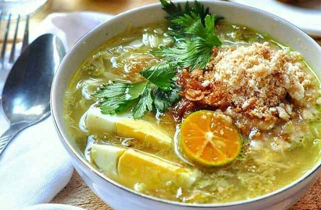
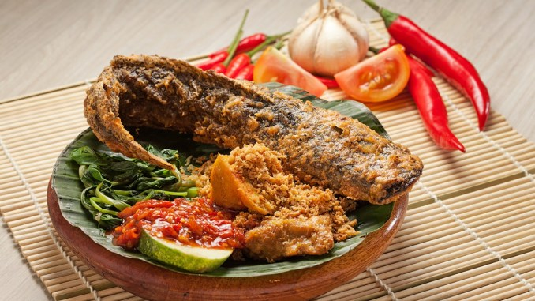
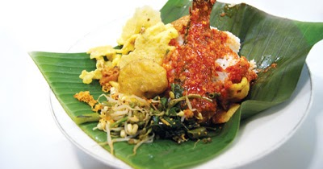
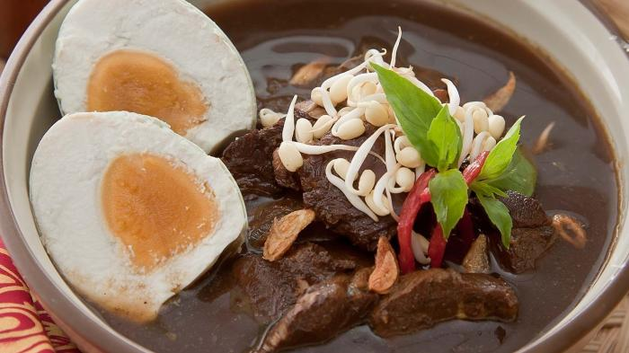
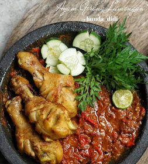
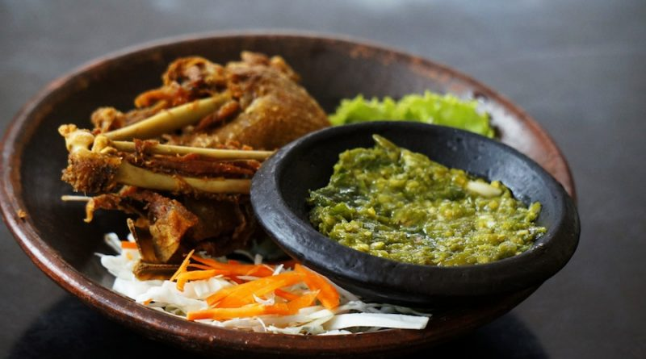
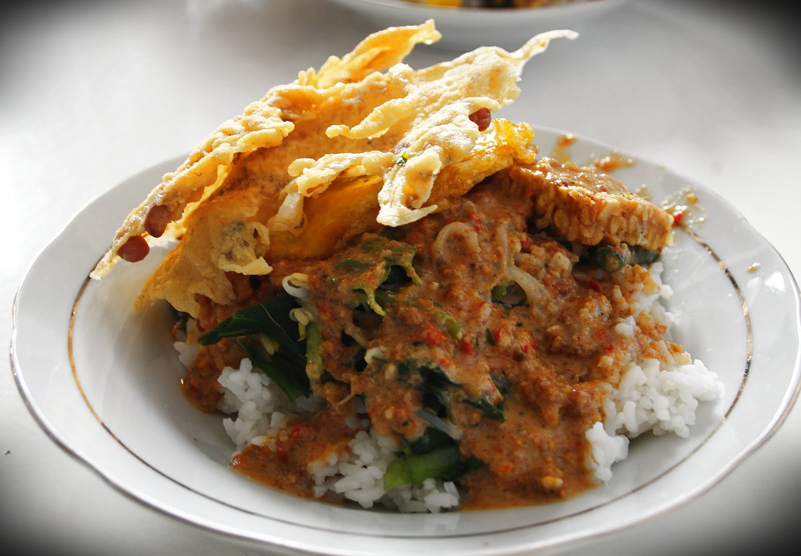
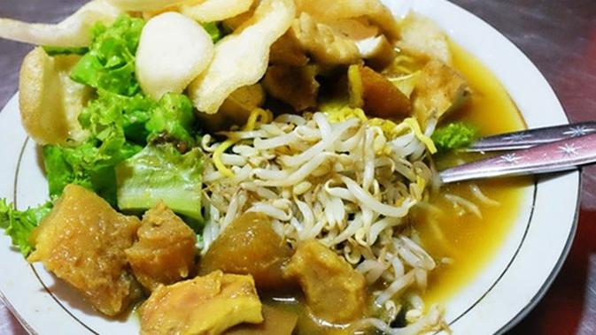

Rumah Makan Lamongan
Rumah Makan Lamongan menyediakan aneka masakan khas Lamongan dengan cita rasa yang lezat. Semua menu dihidangkan di meja makan, sesuai dengan standard operation procedure restoran lainnya.
Menu andalan yang ditawarkan rumah makan ini diantaranya soto, pecel lele, ayam bakar, nasi boran dan masih banyak lagi. Namun, menu yang paling utama disini adalah Soto Lamongan.
Fasilitas yang dimiliki oleh rumah makan ini memiliki fasilitas yang terbilang lengkap. Mulai dari lahan parkir yang luas dan cukup menampung banyak kendaraan, meja makan yang memuat banyak orang, tersedia juga ruang makan VIP room dengan pendingin udara bagi, ruang makan lesehan, minimarket, ATM, toilet dan mushala dengan ukuran besar, bersih dan terawat.
Di Lamongan Kota, Rumah Makan Lamongan memiliki 2 lokasi yang bisa anda pilih yaitu
- Jalan Veteran No. 11
- Jalan Mastrip No. 5
Tentang Menu Rumah Makan Lamongan
1. SOTO LAMONGAN
Apakah Soto Lamongan itu ?
Soto Lamongan adalah sajian makanan soto ayam yang khas dari Lamongan, Jawa Timur. Soto yang satu ini sangan khas dan berbeda dengan soto lainnya, baik dari segi penyajian maupun rasanya. Soto Lamongan merupakan salah satu makanan tradisional dari Lamongan yang sangat terkenal kelezatannya. Tidak hanya di daerahnya sendiri, namun juga merupakan masakan yang sangat terkenal di Indonesia.
Keistimewaan Soto LamonganSoto Lamongan ini sedikit berbeda dengan soto lainnya. Salah satu ciri khas dari Soto Lamongan ini terletak pada serbuk krupuk udangnya yang sering disebut Koya. Apabila serbuk Poya tersebut di campurkan dengan kuahnya makan akan menghasilkan rasa gurih yang khas pada Soto Lamongan ini. Selain rasanya nikmat, aroma Soto Lamongan ini juga sangat menggugah selera.
Pengolahan Dan Penyajian Soto LamonganProses Pembuatan Soto Lamongan ini hampir sama dengan soto pada umumnya. namun, daging ayam yang digunakan adalah daging ayam kampung pilihan, sehingga menghasilkan rasa ayam yang gurih dan empuk. Untuk kuah dari Soto Lamongan dibuat dari bumbu khusus dengan aneka rempah yang membuat rasa kuahnya sangat kuat. Selain itu, kuahnya juga menggunakan kaldu ayam asli sebagai penyedap rasa.
Dalam penyajiannya, Soto Lamongan ini disajikan dengan nasi dan bahan tambahan seperti ayam suwir, irisan kol, tomat, daun bawang, mie bihun, dan irisan telur dalam satu amngkuk. Kemudian disiram dengan kuah soto dan ditambahkan dengan taburan Koya dan bawang goreng. Selain itu, ada juga yang menambahkan seperti ceker ayam, kulit ayam, satam ayam dan kentang goreng sebagai pelengkap. Untuk penambahan rasa Soto Lamongan ini bisa ditambahkan seperti sambal, jeruk nipis, dan kecap.
Cita Rasa Soto LamonganSoto Lamongan memiliki cita rasa yang gurih dan kuah yang bening dengan rasa ayam yang sangat kuat sehingga menjadi keistimewaan tersendiri pada Soto Lamongan. Tidak lupa juga campuran serbuk Koya yang menjadikan Soto Lamongan ini semakin terasa kelezatannya. Selain itu, didukung dengan isi soto seperti ayam suwir, daun bawang, irisan telur, dan bahan lainnya membuat Soto Lamongan ini sangat kaya akan rasa.
2. PECEL LELE

Penyajian Pecel Lele di Rumah Makan kami ini ikan lele yang digoreng kering dengan minyak lalu disajikan dengan sambal tomat dan lalapan. Lalapan biasa terdiri dari kemangi, kubis, mentimun, dan kacang panjang.
3. NASI BORAN

Nasi boranan ini biasanya berisikan nasi yang dicampur dengan berbagai lauk-pauk yang bisa dipilih sendiri seperti ikan bandeng, daging ayam, tahu, tempe, jeroan, telur asin, telur dadar, sampai ikan sili.
Ikan sili yang menjadi ciri khas nasi boranan disebut-sebut lebih mahal dari daging ayam. Nasi yang dicampur lauk tersebut diberi bumbu dan kemudian ditaburi rempeyek di atasnya.
4. RAWON

Rawon pada dasarnya adalah sup daging. Daging yang menjadi bahan pembuat rawon biasanya daging sapi yang dipotong kecil-kecil.
Di Rumah Makan kami menyajikan rawon ini dengan nasi, sambal terasi beserta tauge, telur asin, empal goreng dan kerupuk.
5. AYAM GORENG

Ayam Goreng khas Lamongan ini sangat spesial! kenapa demikian? bumbu bumbu yang digunakan sangatlah komplit dan dijamin rasa rempahnya sangat kuat, seperti lenkuas, ketumbar, lada, jahe dan kunyit. Ayam yang kami sajikan ini sangat pas karena digoreng kering dengan sambal penyet kemangi.
6. BEBEK GORENG

Bebek Goreng khas Lamongan ini sangat spesial! kenapa demikian? bumbu bumbu yang digunakan sangatlah komplit dan dijamin rasa rempahnya sangat kuat, seperti lenkuas, ketumbar, lada, jahe dan kunyit. Ayam yang kami sajikan ini sangat pas karena digoreng kering dengan sambal penyet kemangi
7. NASI PECEL

Nasi pecel kami ini menggunakan daun pisang sebagai alas nasi, namun sebagai alas utamanya tetap mengunakan piring. Sayuran yang dipakai juga cukup variatif, seperti sayur kangkung, taoge, kacang panjang, kemangi, mentimun, dan biji lamtoro. Kemudian nasi dan sayur disiram dengan bumbu pecel dan diberi rempeyek kacang di atasnya.
Sebegai pelengkap pecel, disediakan juga lauk bagi Anda yang lebih suka makan pecel plus lauk. Ada jeroan, telur asin, telur dadar, perkedel dan lauk-lauk lainnya. Anda tinggal memilih saja lauk apa yang Anda mau.
8. TAHU CAMPUR

Tahu campur adalah salah satu makanan khas Jawa Timur, tepatnya dari kota Lamongan. Tahu campur terdiri dari sop daging sapi kenyal, tahu goreng, perkedel singkong, taoge segar, selada air segar, mi kuning, dan kerupuk udang. Semua ini kemudian dicampurkan ke bumbu petis, bawang goreng, dan sambal.